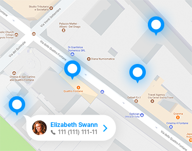

<main class="gray-bg-citizen coin-bg">
  <section class="geo-agent">
    <h3 class="top-header">
      <div class="back-button" [routerLink]="['/' +userRole+ '/services']">Back</div>
      Geolocalisation agent</h3>
    <div class="container">

      <div class="row">
        <div class="col-sm-12 col-md-12 col-lg-10">
          <!---->

          <app-g-map [lat]="latitude"
                     [lng]="longitude"
                     (onAgentsMarkersAdded)="setAgentsMarkersFunction($event)"></app-g-map>

        </div>
        <div *ngIf="agentsMarkers && agentsMarkers.length" class="col-sm-12 col-md-12 col-lg-2">

          <div>
            <button id="startScan" class="orange-button blue-button"
                    (click)="startGettingMyCoord()"
                    (touchend)="startGettingMyCoord()">My Coordonees</button>
            <div id="geolocation"></div>
          </div>

          <div *ngFor="let agent of agentsMarkers" class="search__user active">
          <!--<div class="search__user active">-->
            <div>
              <span class="logo" style="background-image: url('../../../../../assets/img/user.png')"></span>
              <div>
                <div>{{agent.nom}}</div>
                <span class="tel"><i class="fa fa-phone" aria-hidden="true"></i>{{agent.telephone}}</span>
              </div>
            </div>
            <div class="chat">
              
              Chat message
            </div>
          </div>
        </div>
      </div>
    </div>
  </section>

</main>
